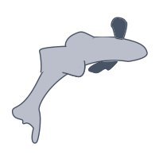

Skills
data-first programming.

data scientist | environmental engineer

Health Scientist || US Centers for Disease Control and Prevention
Data Lead for the National Wastewater Surveillance System
Ph.D., Stanford University, Environmental Engineering and Science